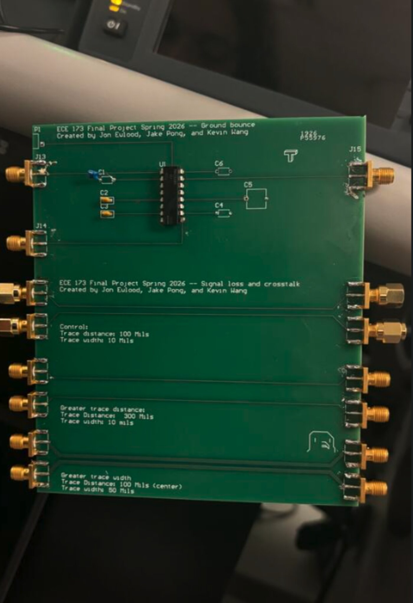
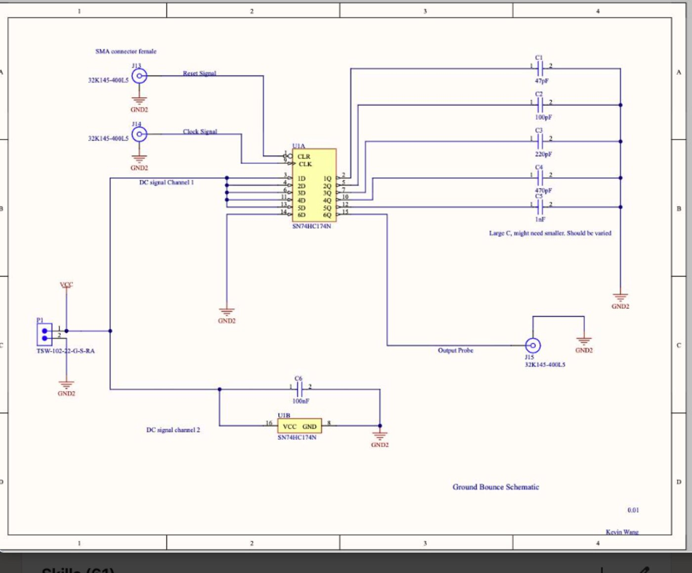
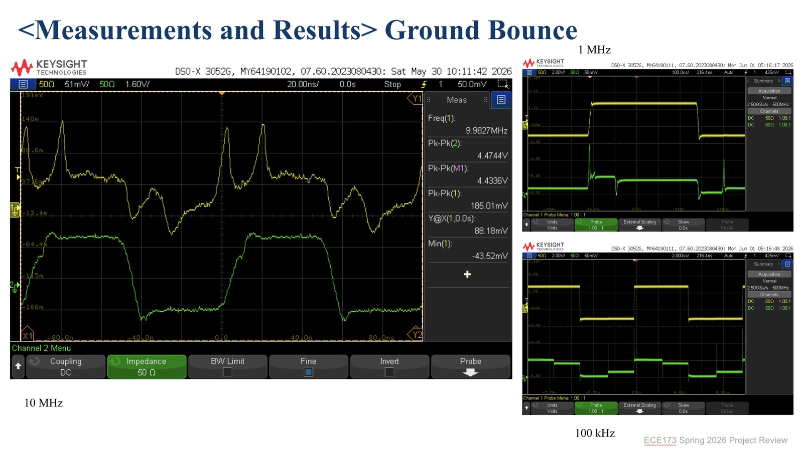
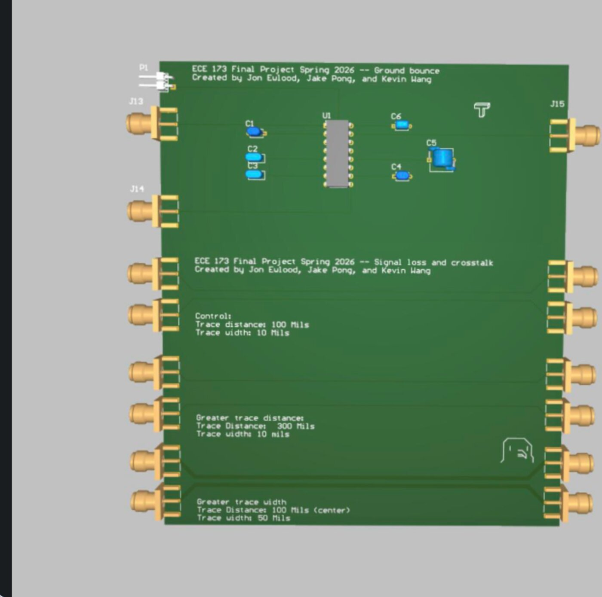
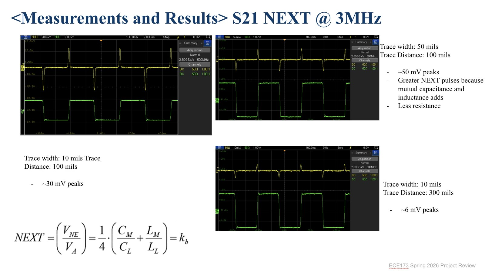
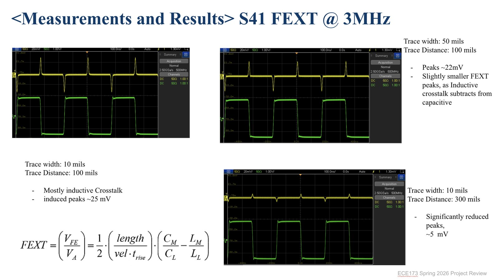

High-Speed Digital Circuit Demonstration PCB
A 2-layer PCB built to make three high-speed signal-integrity effects (ground bounce, near-end crosstalk, and far-end crosstalk) directly measurable rather than theoretical.

Overview
We wanted a real, hands-on understanding of how digital signal behavior changes between low-speed and extremely high-speed operation (up to 20 MHz and beyond), where effects that are negligible on a slow bus start to dominate. So together with teammates Jon Elwood and Jake Pong, I designed and built a 2-layer PCB specifically to test and demonstrate the most common high-speed signal-integrity effects rather than just simulate them. The board is split into two sections: a ground bounce section, where six simultaneously switching flip-flop outputs are used to induce a measurable "bounce" on the local ground reference, and a signal loss / crosstalk section, where three trace geometries let near-end crosstalk (NEXT), far-end crosstalk (FEXT), and channel loss be isolated and measured independently.
Team & Contributions
- Jon Elwood, signal loss / crosstalk PCB design, testing, and soldering
- Jake Pong, PCB layout, load selection, testing, and analysis
- Kevin Wang (me), board design and ground bounce circuit schematic, documentation, and testing
Thank you to Professor Bose and TA Jayant for their help designing the board and interpreting our data.

Components
- SN74HC174N hex D-flip-flop, six simultaneously switching outputs drive the ground bounce section.
- Load capacitors (47 pF – 1 nF), six different capacitances on the ground return path, so the bounce effect could be measured across a range of switching loads.
- 100 nF bypass capacitor, local supply decoupling for the flip-flop.
- 32K145-400L5 SMA connectors, repeatable, 50Ω-style probing for both sections.
- TSW-102-22-G-S-RA header, board power input.
Ground Bounce: Theory & Setup
Ground bounce comes from a simple but easy-to-underestimate relationship: V = L × di/dt.
Any real ground return path has some parasitic inductance, and when current through it changes quickly
enough, that inductance develops a real voltage across itself, meaning "ground" briefly isn't at a single,
stable potential everywhere on the board.
To make that effect large enough to measure reliably, the section drives all six outputs of a hex D-flip-flop simultaneously, so their combined switching current produces a large di/dt through a shared ground return. Six different load capacitances (47 pF through 1 nF) were placed on that return path so the bounce could be characterized across a range of switching loads, measurements were taken at 100 kHz, 1 MHz, and 10 MHz to see how the effect scaled with switching frequency.


Crosstalk & Channel Loss: Test Structure
The crosstalk section isolates which physical variable actually drives coupling between adjacent traces by varying only one thing at a time, each over a 12 cm signal path:
- Control, 100 mil trace spacing, 10 mil trace width.
- Test 1 (wide spacing), 300 mil trace spacing, 10 mil trace width, isolating the effect of separation alone.
- Test 2 (wide trace), 100 mil trace spacing, 50 mil trace width, isolating the effect of trace geometry alone.
Measured Results
Near-end (NEXT, S21) and far-end (FEXT, S41) crosstalk were measured at 3 MHz across all three geometries:
| Configuration | NEXT (S21) @ 3 MHz | FEXT (S41) @ 3 MHz |
|---|---|---|
| Control, 10 mil / 100 mil | ~30 mV peak | ~25 mV peak |
| Wide trace, 50 mil / 100 mil | ~50 mV peak | ~22 mV peak |
| Wide spacing, 10 mil / 300 mil | ~6 mV peak | ~5 mV peak |
Tripling the spacing (100 mil → 300 mil) cut both NEXT and FEXT by roughly 5×, the clearest trend in the data. Widening the trace itself (10 mil → 50 mil at fixed spacing) noticeably increased NEXT but left FEXT about the same, a pattern we flagged for further analysis rather than a settled conclusion (see below). Channel loss (S31) was also swept from 100 Hz–20 MHz and again out to 104 MHz, with phase recorded alongside magnitude at both spans.


Analysis & Open Questions
We came out of testing with real data but also with a few questions we didn't fully resolve, which felt more honest to document than to paper over:
- Whether the sign/polarity we saw in the S-parameter (CT) measurements was physically meaningful or a measurement-setup artifact.
- Whether coupling at each trace geometry was predominantly electric-field or magnetic-field in nature, which would explain why widening the trace increased NEXT without moving FEXT.
- How much "charge bank" effects from the power supply influenced the switching-current measurements.
- What Time-Domain Reflectometer (TDR) traces showed about inductive via impedance and rising-edge behavior at the connector transitions.
Thanks: to Professor Bose and TA Jayant for their guidance on the board design and for helping us interpret this data.
Design Improvements
Testing also surfaced a couple of layout issues worth fixing on a future revision:
- Right-angle trace corners. Several high-speed traces on this board use sharp 90° bends. At these signal speeds, right-angle corners behave like a local impedance discontinuity. They contribute to reflections, signal loss, and resonance that a smoother bend avoids. The next revision should route high-speed traces with curved or mitered (45°) corners instead.
- Apparent negative resistance. A few traces showed what measured as negative resistance during testing. We haven't fully root-caused this (whether it's a measurement/setup artifact or a real effect of coupling injecting energy back into the trace), but it's flagged as something to investigate and resolve on the next board.